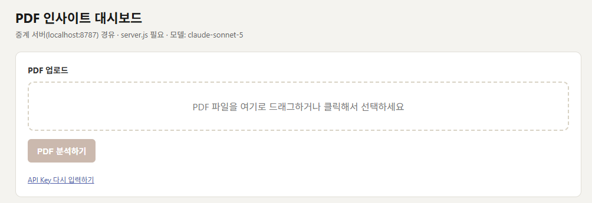
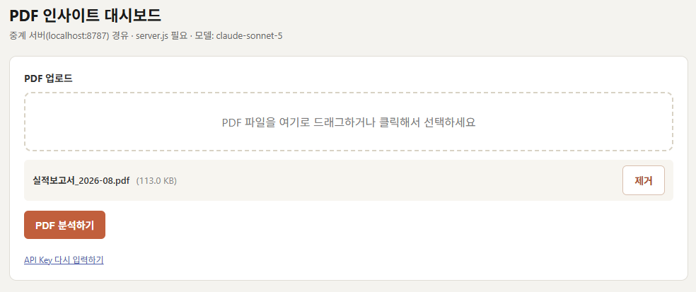
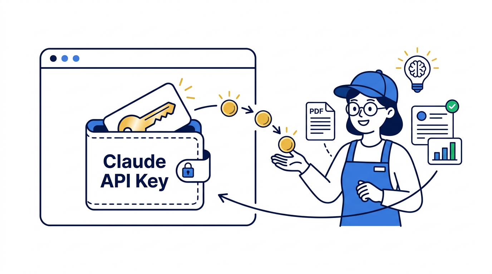

같은 Claude Code로, 이번에는 업무도구를 만듭니다.

M1
나만의 웹페이지

M2
주간 실적 통합표

M3
회의록 PDF

M4
PDF 분석 대시보드
지금 여기

M5
아이디어 기획서 한 장
PDF를 넣으면 요약 · 차트 · 챗봇이 있는 화면을 만듭니다.

① PDF 분석 대시보드 · 챗봇

② 압축 파일 하나로 전달
다음과 같은 멋진 작품도 만들 수 있습니다.

팀원 평가 대시보드
흩어진 기록 → 피드백 초안

실시간 일정 관리
메일·메신저를 한 줄 요약으로

지시사항 이행관리
회의록에서 할 일과 기한을

신시장 인텔리전스
흩어진 조사 자료를 한 화면에

설비고장 도제 시스템
30년 노하우를 물어보는 화면으로
현대자동차 전자편의제어시험1팀 — 흩어진 기록을 모아 근거가 붙은 피드백 초안까지
① 흩어진 기록을 모아 자가 평가와 대조

② 근거를 달아 피드백 초안까지 자동 생성
현대모비스 조향시스템설계2팀 — 메일 · 메신저 · 회의 초청이 하루 종일 섞여 들어온다
① 긴급 · 일반 · 참고로 자동 분류, 일정 충돌은 미리 경고

② 답변 초안까지 준비 — 보낼지는 본인이 결정
현대자동차 미래전략운영팀 — 회의록은 쌓이는데 누가 언제까지 하는지는 흩어진다
① 회의 녹음을 받아써서 회의록 초안 → 지시사항 추출

② 담당 · 기한 · 이행 상태가 표로 남고, 기한 전에 자동 안내
현대자동차 미래혁신2팀 — 신시장 조사는 흩어진 자료를 사람이 읽고 정리해야 했다
궁금한 것을 한 줄로 적으면 — 찾는 일은 웹 검색에, 정리는 AI에
현대제철 제선정비실 — 30년 노하우를 물어보는 화면으로
- 정비 보고서를 재료로쌓여만 있던 문서를 AI가 읽게 했습니다
- 고장 현상을 적으면 원인과 조치베테랑에게 묻던 것을 화면에서 바로
- 현장 용어 사전까지처음 온 사람도 같은 기준으로 판단합니다
자, 그러면 지금부터 멋진 작품을 하나 만들어 보겠습니다.

읽고 요약 · 숫자로
그 문서에 바로 물어보기
오늘 여러분이 만들 한 화면입니다.
받아 놓고 다 읽지 못한 PDF 보고서를 넣으면, AI가 읽고 요약 · 차트 · 대화로 돌려줍니다.

1 PDF 올리기
화면만 있으면 됩니다
→

2 분석하기
여기서 AI가 문서를 읽습니다
→
3 대시보드로 확인
화면만 있으면 됩니다
→
4 문서에 물어보기
여기도 AI 기능입니다

AI에게 일을 시킬 때마다 여기서 돈이 나갑니다
메모장에 저장해 뒀다면
그대로 꺼내서 쓰면 됩니다
저장해 두지 않았다면
발급 화면을 닫으면 다시 볼 수 없습니다
안내받은 페이지에서 다시 발급받으세요

OTP 인증을 한 번 더
Claude에게 연결부터 확인하는 화면을 만들어 달라고 했습니다.
이렇게 부탁했습니다
- HTML 파일 하나로만
- 화면에서 API KEY를 받고
- 버튼을 누르면 연결 테스트
- 안 되면 자세한 에러메시지
- 되면 간단한 채팅 화면
SDK는 설치하지 않고 · 모델은 Sonnet

그런데 눌러 보면 — 연결 실패
- 배포받은 강의자료에서 실습자료 > base 폴더를 엽니다안에 app.html · server.js · 실행.bat · 샘플 보고서.pdf 가 들어 있습니다
- 그 폴더에서 주소창에 code . 을 입력합니다점 하나까지 그대로 — “지금 이 폴더를 VS Code로 열어라”라는 뜻입니다
- VS Code 터미널에서 claude 를 실행합니다터미널은 상단 메뉴 Terminal > New Terminal

이 폴더에서 code .
코드는 한 줄도 쓰지 않았습니다. 띄워 달라고 말했을 뿐입니다.


받아 보고 바로 되돌려 보냅니다.
이렇게 말하면 됩니다
아니야. 다시해와. 상단부분이 엉망이야
제목은 가운데로, 버튼은 오른쪽 끝으로 옮겨줘
지금 만든 화면은 중계 서버가 떠 있어야 열립니다. 그대로는 못 줍니다.
필요한 것을 한 폴더에 모아 압축하면 그게 배포판입니다.
- 같이 넣는 것app.html · server.js · 실행.bat 셋뿐 — 압축하면 0.1MB라 메일에 그냥 붙습니다
- 받는 사람 준비물Node.js 하나. 없으면 실행.bat이 설치 안내를 띄워 줍니다
- 받는 사람압축 풀고 실행.bat 더블클릭. 그게 전부입니다
그 창을 닫으면 앱도 꺼집니다. 쓰는 동안은 그대로 두세요.
셋을 모아 압축하면 끝
- HTML 파일 하나로 만든 경우메일 · 메신저로 전달. 또는 Confluence 빈 페이지에서 //HMG HTML PRO 를 입력하고 소스 전체를 붙여넣기
- 압축 파일(zip)로 만든 경우메일 · 메신저로 전달. exe 첨부는 대부분 차단되지만 zip은 통과합니다. 용량이 크면 공유 드라이브로
- DB가 들어간 웹 App인 경우팀원 데이터를 저장하는 운영 수준이면 표준 H Cloud 환경에 배포해야 합니다
반드시 이 가이드를 따릅니다.

① Confluence 매크로